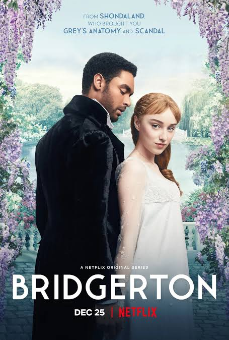
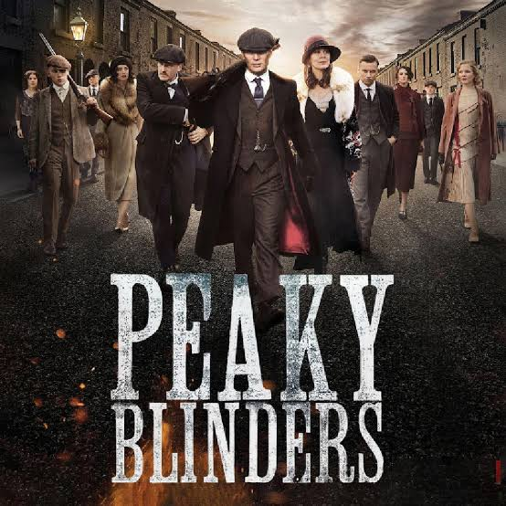
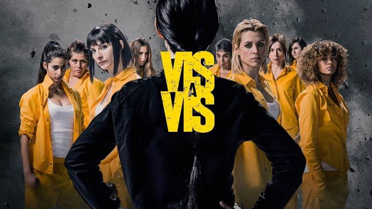

TOP 10 SÉRIES
1- LA CASA DE PAPEL
▪Oito ladrões se trancam com reféns na Casa da Moeda da Espanha. Seu líder manipula a polícia para realizar um plano. Será o maior roubo da história, ou uma missão em vão?. Tudo começa quando um homem chamado O Professor, recruta uma jovem assaltante e mais sete criminosos para um grande roubo.
2- QUEM MATOU SARA?
▪Alejandro Guzmán (Manolo Cardona) foi acusado injustamente pelo assassinato de sua irmã Sara. Agora, ele busca vingança. Após 18 anos na prisão, ele decide se reaproximar da família Lazcano, responsável por incriminá-lo, para tentar provar a sua inocência e descobrir a verdade. Como Sara foi morta a quase duas décadas, Álex terá que juntar as peças desse quebra-cabeça.
3- GREY'S ANATOMY
▪Durante sua residência num hospital, Meredith Grey vive paixões profissionais e pessoais com sua turma de estudantes e médicos. Tudo começa quando Meredith Grey ingressa no seu primeiro ano de residência, ela é filha de uma cirurgiã famosa, e lá ela passa a conhecer e conviver com seus colegas, e temos então o início de histórias emocionantes.
4- ANNE WITH AN "E"
▪A história acompanha a vida de Anne Shirley, uma jovem órfã que, após uma infância de abusos entre orfanatos e casas de estranhos, é enviada por engano para viver com um casal de irmãos em idade avançada.

5- ELITE
▪Em Elite, depois de um problema na escola que frequentam, três alunos do ensino público são transferidos para Las Encinas, a melhor e mais exclusiva escola na Espanha, onde os filhos da elite estudam. O choque entre os menos favorecidos e aqueles que têm tudo culmina em um assassinato.
6- BRIGETON
▪Daphne Bridgerton, a filha mais velha do respeitado clã, se encontra à procura de um marido adequado. Como seus pais, ela gostaria de se casar por amor, mas o irmão mais velho atrapalha seus planos e torna ainda mais difícil sua busca.
7-PEAKY BLINDERS
▪Os Peaky Blinders são uma organização criminosa de origem cigana que se passa na cidade de Birmingham, Inglaterra, em 1919, formada vários meses após o final da Primeira Guerra Mundial (1914–1918). A história é centrada na ambição do líder da gangue inglesa, Thomas "Tommy" Shelby.
8-THE 100
▪Um apocalipse nuclear dizimou o planeta há 97 anos atrás, 100 jovens que sobreviveram em uma nave espacial retornam a Terra para avaliar as condições do planeta.
9- VIS A VIS
▪Manipulada pelo homem por quem se apaixonou, Macarena fica arrasada ao ser condenada a sete anos de prisão por crimes fiscais. Agora deve aprender a viver num ambiente hostil e impiedoso. Ela tenta esconder dos pais que foi parar na penitenciária feminina, mas não consegue por muito tempo. A vida na prisão fica complicada com Zulema.
10- AMIGAS PARA SEMPRE
▪Tully e Kate se conheceram quando ainda adolescentes, em 1974. E a amizade das duas permanece até hoje, mas como nem tudo são flores, uma grande traição ameaça separar as duas para sempre.